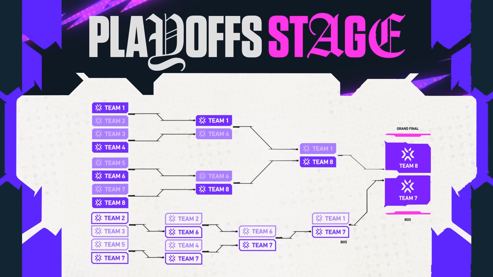

The VCT Masters London 2026 will follow a two-stage format, beginning with the Swiss Stage and culminating in the Playoffs.
VCT Masters London 2026 is the second international tournament of the 2026 Valorant Champions Tour (VCT) season, held in London, United Kingdom, from June 6–21, 2026. The event features 12 of the world's best teams from the Americas, EMEA, Pacific, and China regions competing for a share of the prize pool and valuable Championship Points that help determine qualification for Valorant Champions 2026.

The Swiss Stage of VCT Masters London 2026 will serve as the opening phase of the tournament, featuring eight teams that qualified as the second and third seeds from the Americas, EMEA, Pacific, and China regions. Taking place from June 6–10 at the Copper Box Arena in London, the stage will use a Swiss-system format in which teams compete against opponents with matching records in a series of best-of-three matches.

Teams that secure two victories will advance to the Playoffs, where they will join the four regional Stage 1 champions. Meanwhile, teams that suffer two losses will be eliminated from the competition. With a playoff berth and valuable Championship Points on the line, the Swiss Stage is expected to showcase intense international matchups as teams battle to keep their Masters London title hopes alive.
The Playoffs of VCT Masters London 2026 will bring together the tournament's top eight teams as they compete for the championship title. The four teams that advance from the Swiss Stage will be joined by the four regional Stage 1 champions from the Americas, EMEA, Pacific, and China regions. Taking place after the conclusion of the Swiss Stage, the Playoffs will feature a double-elimination bracket, giving teams a second chance to fight their way to the Grand Final.

Most matches will be played as best-of-three series, while the Lower Bracket Final and Grand Final will be contested in a best-of-five format. With international prestige, Championship Points, and the Masters London trophy on the line, the Playoffs are expected to deliver the highest level of VALORANT competition as the world's best teams battle for supremacy on the global stage.
| Game: | VALORANT |
| Event: | VCT Masters London 2026 |
| Date: | June 6–21, 2026 |
| Location: | London, United Kingdom |
| Participating Teams: | 12 (4 in Each Region) |